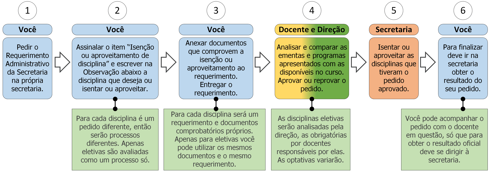

10. Isenção ou aproveitamento de disciplina

10.1 Descrição
Disciplinas já cursadas em outras instituições (isenção) ou em outros cursos da UNIRIO (aproveitamento) podem ser isentadas ou aproveitadas, notificadas no seu histórico escolar como já concluídas, sem nota. Para isso deve seguir os seguintes passos:
- A. Peça o Requerimento Administrativo da Secretaria;
- B. Assinale o item “Isenção ou aproveitamento de disciplina” e escreva no campo Observação o nome da disciplina que deseja incluir e seu código;
- C. Anexe os documentos necessários (ver documentos na seção 10.2) ao requerimento. Para cada disciplina obrigatória ou optativa será um requerimento específico com todos seus respectivos documentos necessários. As eletivas podem ser reunidas em um único requerimento;
- D. Entregue o requerimento;
- E. O docente e/ou a direção avaliarão se a ementa apresentada compatível com a ementada disciplina da UNIRIO (ver regra 1 na seção 10.3);
- F. A Secretaria isentará ou aproveitará a disciplina no seu histórico escolar;
- G. Vá à secretaria e procure saber sobre o resultado do seu requerimento (ver regra 2 na seção 10.3).
10.2 Documentos necessários
- Ementa da disciplina que será requerida isenção ou aproveitamento, assinada e carimbada pela instituição*;
- Histórico escolar para cada disciplina que será requerida isenção ou aproveitamento, assinado e carimbado pela instituição*;
- *Apresentar original e uma cópia de cada um. A cópia será anexada.
10.3 Regras
- 1. Período de avaliação: O corpo docente e a direção têm até 7 dias úteis para efetivar a análise e avaliação da possibilidade de isenção ou aproveitamento.
- 2. Prazo de efetivação: A Secretaria terá, então, até 5 dias úteis para realizar a isenção ou aproveitamento da disciplina;